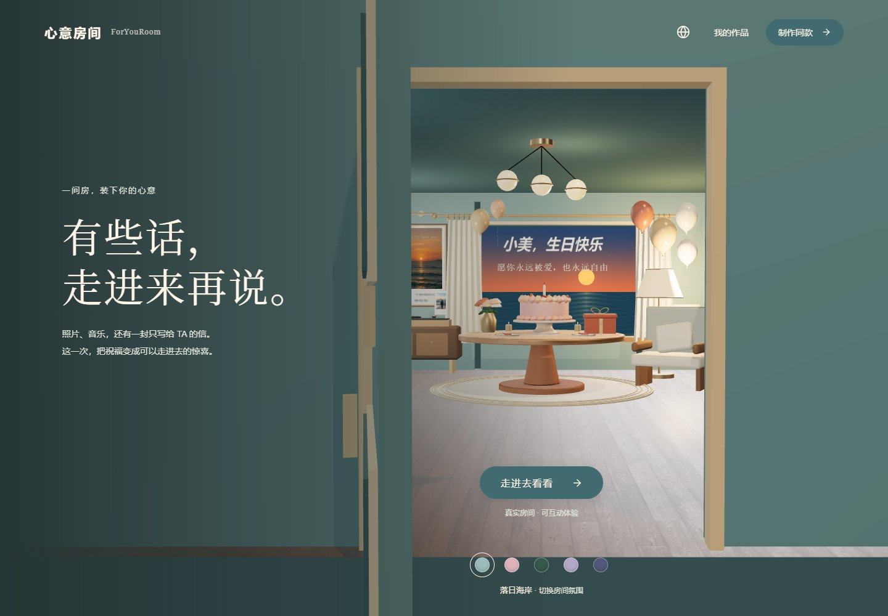
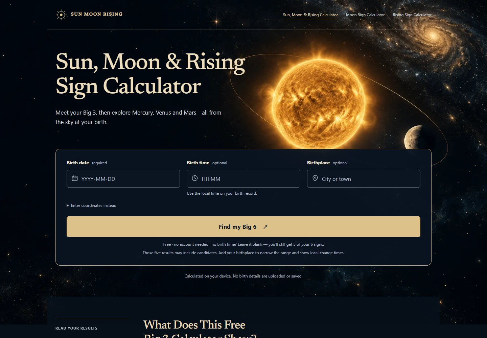
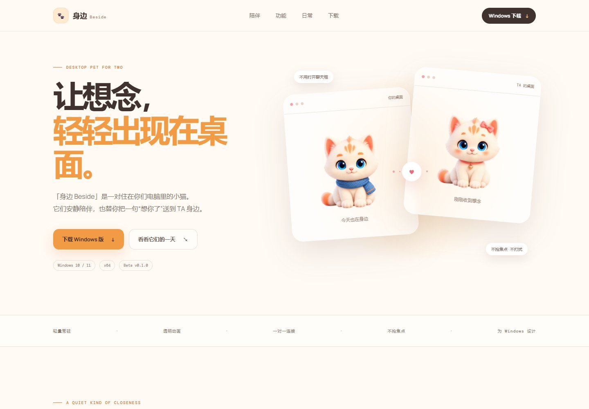
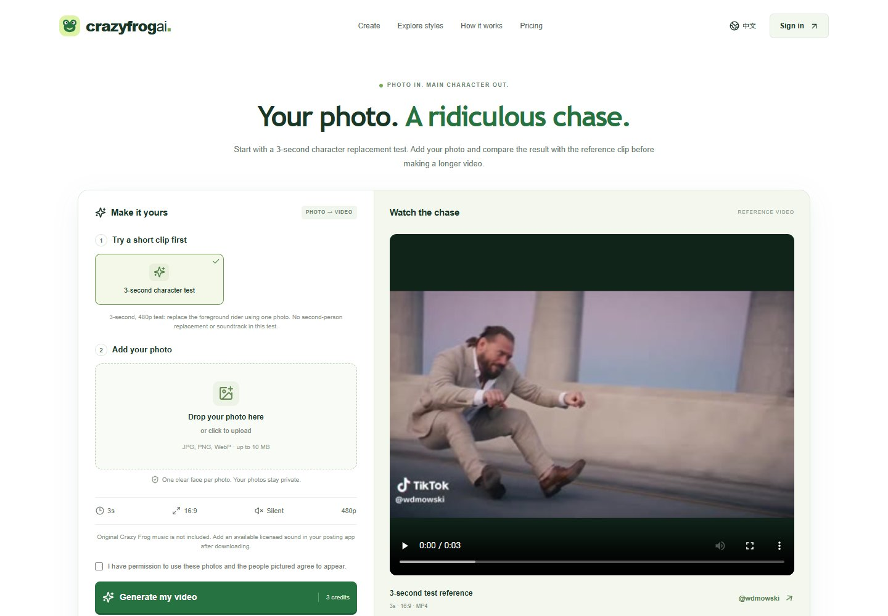

心意房间 ForYouRoom
把照片、音乐和一封专属的信，放进可以走进去的房间。让一次生日祝福，或一句藏在心里的话，变成可分享的惊喜。
JACOB'S LITTLE INTERNET
你好，我是 Jacob。这里收藏着我做的产品，
也记录着好奇心变成作品的过程。欢迎随意逛逛。
THINGS I'VE MADE
从实用工具，到一些浪漫的小实验。
显示全部 4 个作品

把照片、音乐和一封专属的信，放进可以走进去的房间。让一次生日祝福，或一句藏在心里的话，变成可分享的惊喜。

从出生日期、时间和地点出发，探索太阳、月亮与上升星座。无需注册，在浏览器内完成计算，也标明信息不完整时的可能结果。

一对住在电脑里的小猫，安静陪着彼此的日常。用一个小动作或一句短消息，让“想你了”轻轻出现在 TA 的桌面。

用一张照片，试着成为一段荒诞追逐戏的主角。从 3 秒人物替换测试开始，让普通照片变成充满趣味的 AI 短视频。
下一个想法，正在路上
A LITTLE ABOUT ME
把好奇心写进代码，把生活里的小念头做成网站。这里是我的造物记录，收集那些已经从想法走到现实的作品。希望其中某一个，刚好对你有用，或让你会心一笑。